About Milano
Milan (en italien Milano, du latin Mediolanum ; en lombard Milàn) est une ville d'Italie située au nord du pays, à proximité des Alpes. Chef-lieu de la région Lombardie, située au milieu de la plaine du Pô, Milan compte approximativement 1 369 000 habitants en 2016, ce qui en fait la deuxième ville d'Italie en nombre d'habitants. En comprenant son agglomération, elle constitue toutefois la plus grande aire urbaine du pays ; avec ses 7 123 563 d'habitants en 2009, celle-ci est la quatrième aire urbaine d'Europe, après celles de Moscou, de Paris et de Londres. Région dynamique et densément peuplée, cœur industriel et poumon financier de l'Italie, elle représente la partie méridionale de la dorsale européenne1, aussi appelée « Banane bleue ».
Why to visit Milano ?
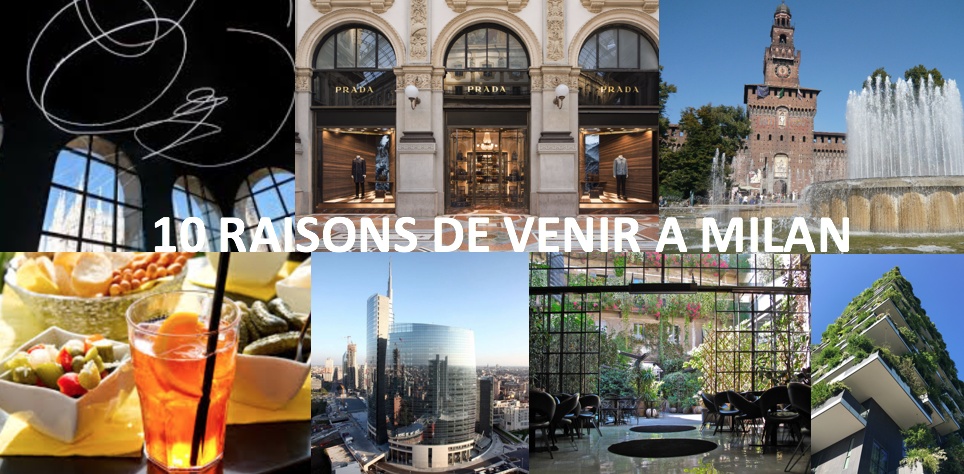1.Culture: musées, expos, festivals, galeries, concerts.
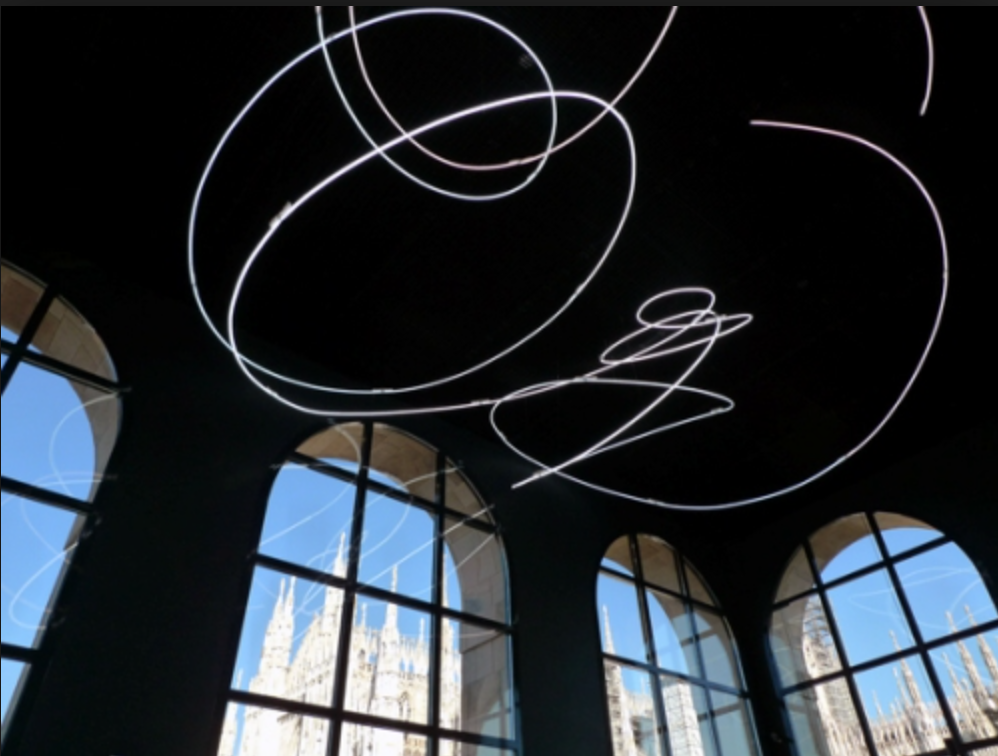Milan offre un ample choix d’activités culturelles et un patrimoine riche. Parmi les musées à ne pas manquer aller voir le Palazzo Reale, le Musée del ‘900, le Mudec, la pinacothèque de Brera et la villa Necchi-Campiglio, ancienne demeure d’un riche industriel milanais. Il Palazzo della Ragione propose régulièrement des expos photographiques d’exception. De nombreux festivals sont organisés chaque année et connaissent un succès grandissant: Milan Jazz Festival JazzMi, Piano City Milano, Wired Next Fest et des concerts gratuits régulièrement sont organisés Piazza del
2.Divertissement: aperitivo, bars, DJ, nightlife, restaurants.
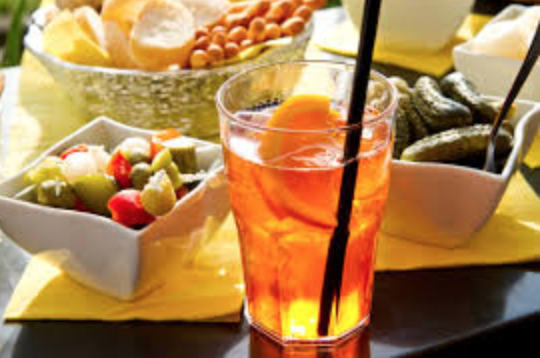A Milan ne manquez pas l’heure de l’aperitivo! Une tradition Milanaise pour se retrouver entre amis, l’aperitivo est souvent accompagné d’un buffet appétissant (sandwichs, crostinis, charcuterie, fromages, bruschettas, chips, du chaud, du froid, le tout en général pour €7 boisson comprise). Bars, Lounge, DJ Set, nightlife. Pour ne citer que quelques discothèques : Hollywood, Old Fashion, Tocqueville. La gastronomie est des plaisirs de l’Italie et à Milan sont présents une vaste variété de restaurants et de plaisirs culinaires.
3.Mode & shopping
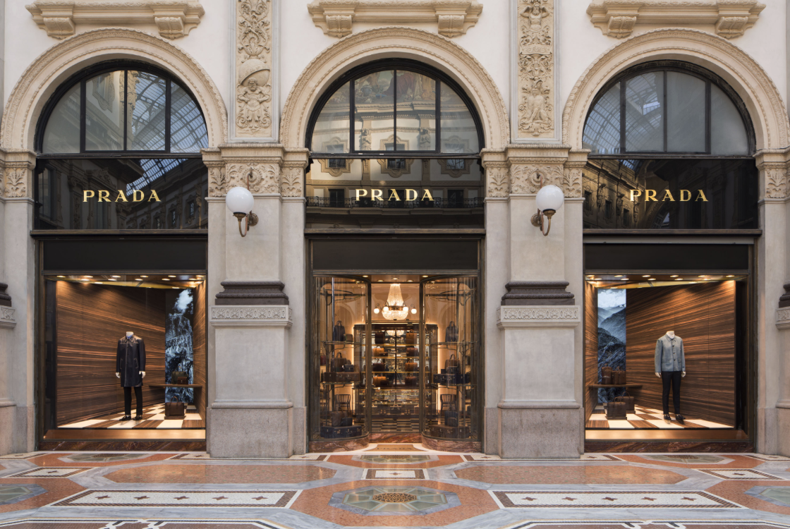Milan et mode vont de pairs. Capitale du shopping le Quadrilatère de la Mode est la Mecque pour toutes les fashionistas du monde entier. Via Montenapoleone, via della Spiga, Corso Vittorio Emanuele II, Corso Como, autant de vitrines de luxe à admirer. Milan est reconnue mondialement comme une des capitales de la mode avec la Fashion Week. Et ne manquez pas la période des soldes ! Quelques exemples de boutiques mode/design ? High-Tech Cargo, Corso Como 10, Armani, Trussardi, Wait&See, Excelsior. Ou le nouveau centre commercial a Arese, le plus grand d’Europe inauguré en 2016, où vous trouverez toutes les marques commerciales. De nouvelles boutiques se créent et font trésor de créativité. Allez voir MadZone via Brera 2 !
4.Architecture & Design
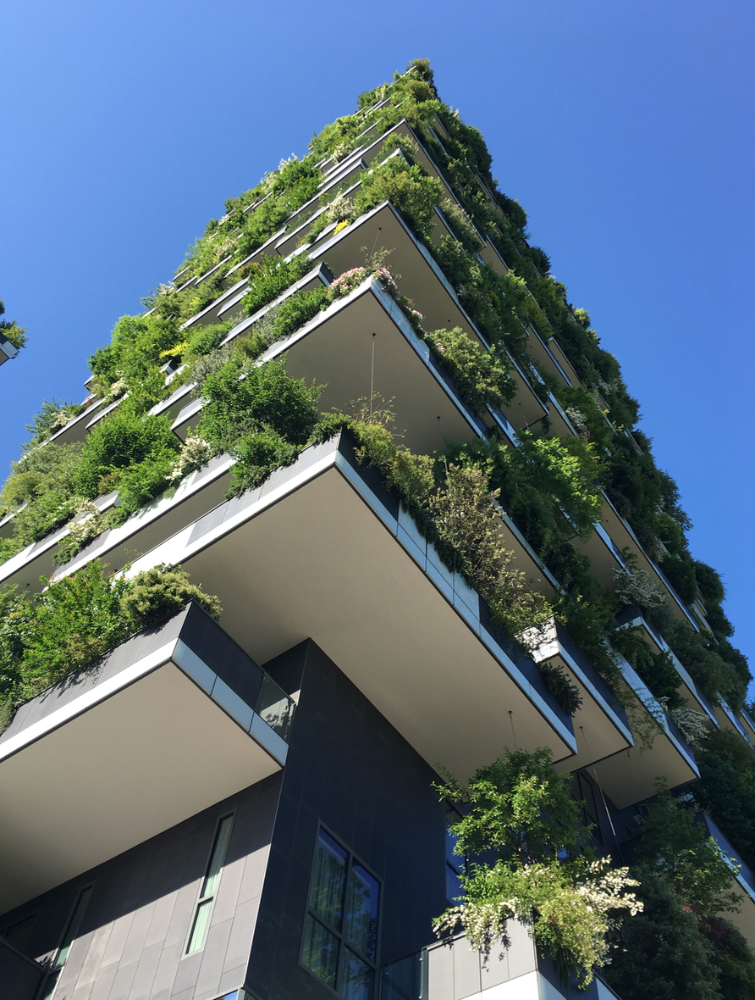Le design industriel et l’architecture ont une place d’honneur à Milan. Pour preuve le célèbre Salon du Meuble et la Milano Design Week, évènements qui animent la ville pendant plusieurs semaines avec de nombreuses soirées, installations et animations. Des quartiers entiers ont été rénovés donnant naissance à des gratte-ciels dans lesquels se reflètent les montagnes. Allez voir le Bosco Verticale (foret verticale) élu un des plus beaux gratte-ciels au monde.
5.Histoire & monuments
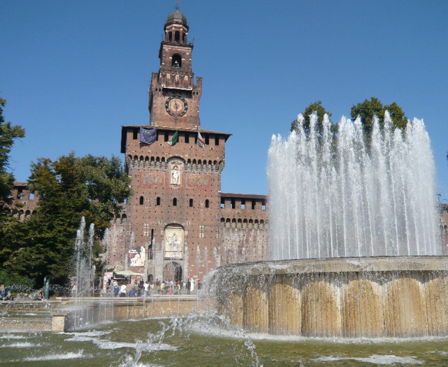Milan, aux premiers abords, semble plus austère que Florence, Rome ou Venise. Ne vous y fiez pas ! Des trésors y sont à découvrir, tous comme les Milanais. Milan est construit sur des vestiges romains encore partiellement visibles, a connu son heure de gloire en 1450 avec les Sforza, Seigneurs de Milan et le génie de Leonardo da Vinci. Après la Révolution Milan est passée sous domination française pendant quelques décennies. A la fin du XIX siècle, suite à l’unification de l’Italie et à la monarchie des Savoia l’essor économique apporte de grandes richesses industrielles et financières à Milan. Sont alors construits des Palais et demeures fastueuses enrichissant le patrimoine historique Milanais. Suite à la seconde guerre mondiale Milan s’est imposée comme capitale économique d’Italie. Témoins de cette richesse architecturale sont le Castello Sforzesco, le Duomo, la galerie Vittorio Emanuele II, l’Arco della Pace, Palazzo Reale, Villa Reale.
6.Pôle économique
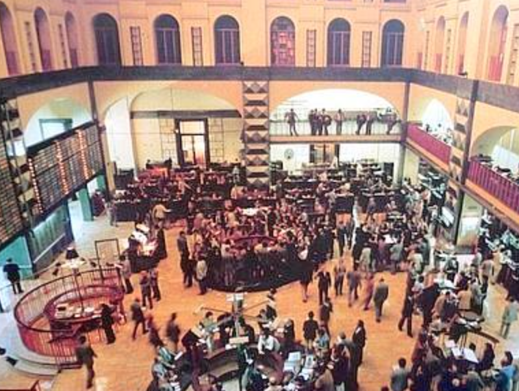Milan est la capitale économique de l’Italie avec Piazza Affari pour la finance, le dense tissu industriel, la mode, le design industriel, la publicité, la sharing economy. Milan connaît un souffle nouveau et attire à nouveau les investisseurs étrangers en créant emplois et en faisant levier sur les nouvelles technologies et le digital.
7.Universités
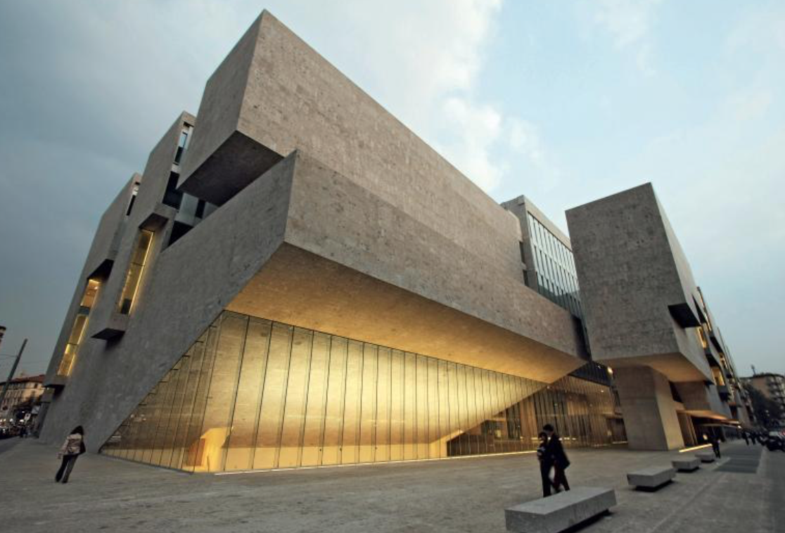Des universités prestigieuses sont à Milan. La Bocconi, Politecnico, Cattolica, Università Statale proposent une formation d’excellence, dans différents domaines de compétences avec des cursus entiers en anglais. Milan est une des destinations privilégiées de nombreux étudiants européens.
8.Liberté d’expression
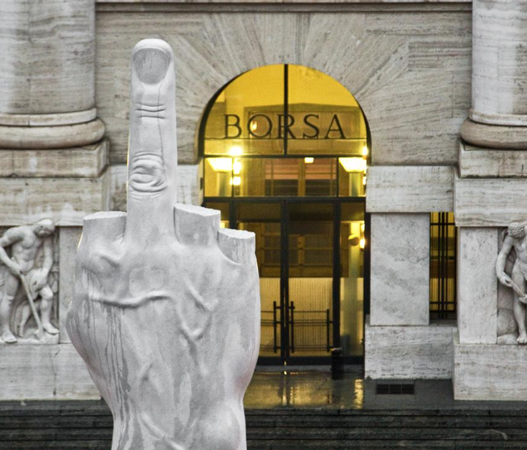Milan anime la créativité, on sent que tout est possible. Le doigt d’honneur Piazza Affari n’est plus si provocateur. Tous les looks, les tendances, les styles se mélangent, c’est une ville qui évolue sans cesse.
9.Evènements exclusifs
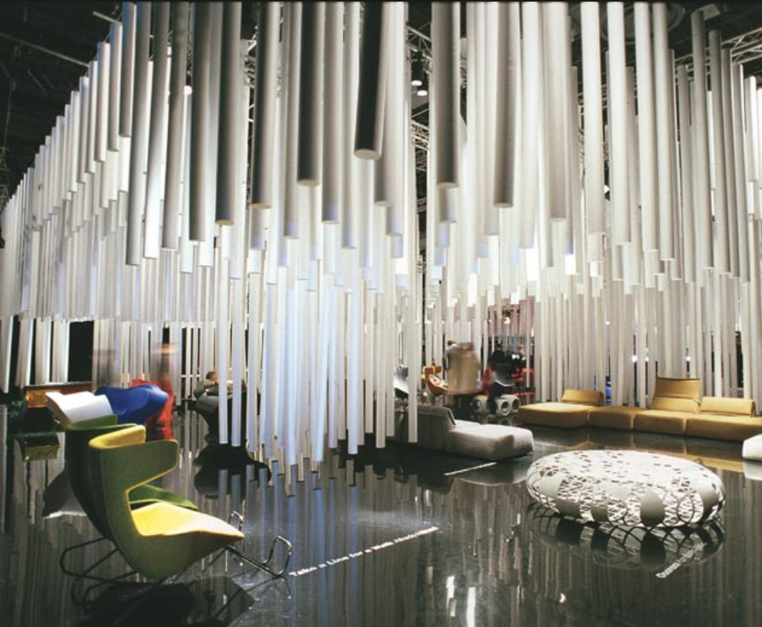Milan est une scène à ciel ouvert. Plusieurs fois par an la ville se transforme et devient partie de la mise en scène des Fashions Week, du Salone del Mobile, du Fuori Salone, de la Design Milano Week pour citer les évènements plus connus. Les quartiers de Brera, Arco della Pace, Porta Genova, Porta Nuova, piazza Duomo mettent en valeur leur beauté et particularités grâce à tous les créatifs et designers.
10.Position géographique
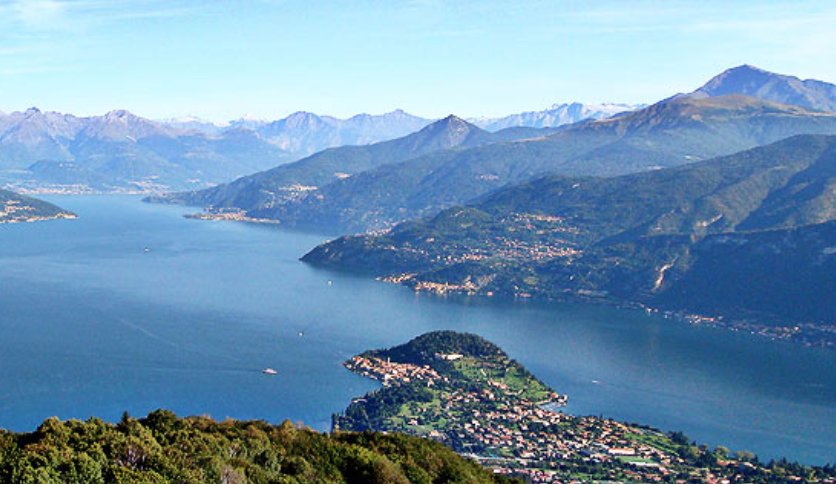Milan est facile d’accès. Une heure d’avion depuis Paris, deux aéroports Linate et Malpensa. Le réseau ferroviaire est très moderne et avec les trains « Italo » et « Frecciarossa » le TGV italien est l’un des plus performants au monde. A une demi-heure de Milan Come et le lac de Come, à une heure les montagnes, à une heure et demie Santa Margherita et Portofino.
Les incontournables de Milan
Si Milan est d’abord connue pour la mode, la ville ne manque pas de curiosités artistiques et architecturales, musées et lieux culturels à visiter. En voici les plus populaires, plus ou moins touristiques, et qui valent le détour lors d’un séjour dans la cité lombarde.
Le Duomo

Littéralement un symbole de la ville, la cathédrale gothique de la Nativité-de-la-Sainte-Vierge de Milan, plus connue sous le nom de Duomo est la troisième plus grande du monde !
Aussi extraordinaire et foisonnante à l’intérieur qu’à l’extérieur, elle offre également une terrasse à son sommet qui permet d’avoir une vue plongeante sur la place et la ville. À faire au coucher du soleil.
La Galleria Vittorio Emanuele II
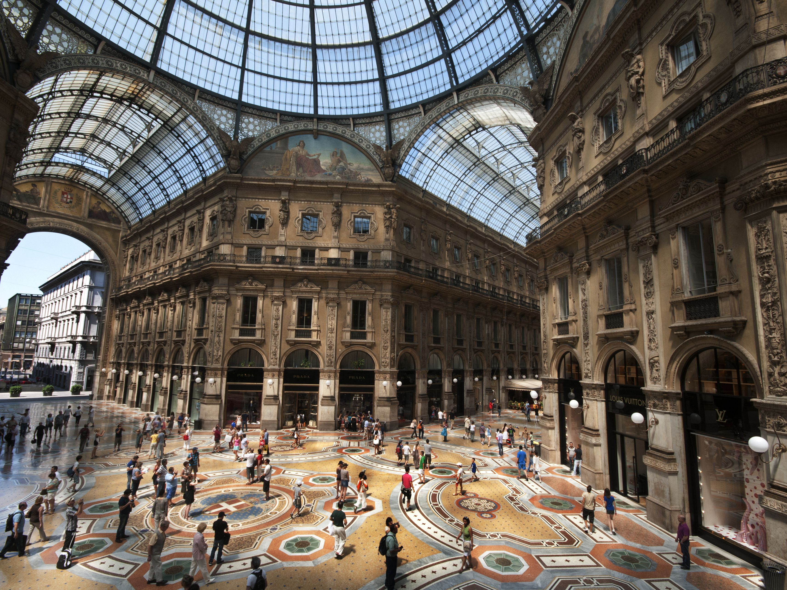Sur la Place du Duomo, la Galleria Vittorio Emanuele II est un superbe passage de type néo-classique surmonté de verrières, qui relie la place au Theatro de la Scala.
Son entrée en forme d’Arc de Triomphe est déjà impressionnante, mais les détails architecturaux de l’intérieur ainsi que les boutiques de luxe de la galerie valent aussi le détour.
Et si vous êtes du type superstitieux, ne manquez pas la mosaïque du taureau sous la coupole centrale. Il faudra alors faire trois tours de talon sur l’écusson de Turin au-dessus du taureau, pour mettre la chance de son côté…
La Scala
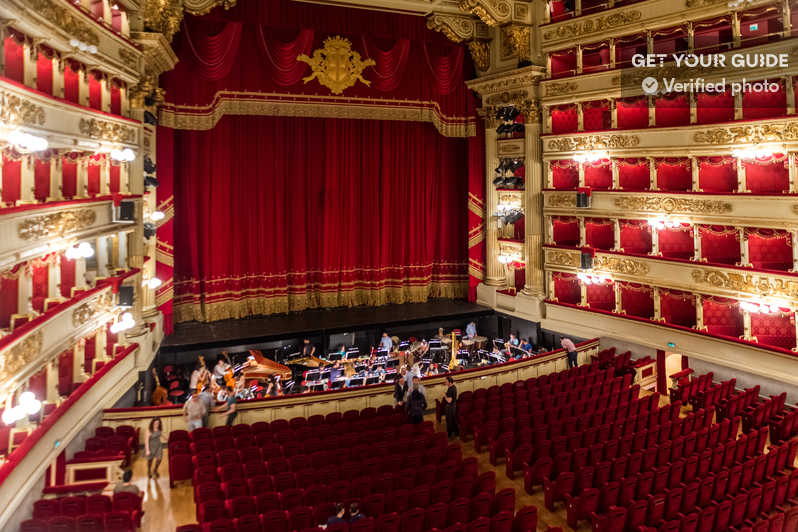À la sortie de la Galleria Vittorio Emanuele II, impossible de passer à côté d’une visite de la Scala lors d’un séjour à Milan, un des plus célèbres opéras du monde !
C’est ici même qu’ont été créés Otello et Nabucco de Giuseppe Verdi ou encore Madama Butterfly de Giacomo Puccini.
Et si vous n’êtes pas amateurs d’opéra, les salles du Teatro justifient à elles seules le déplacement.
La pinacoteca de Brera
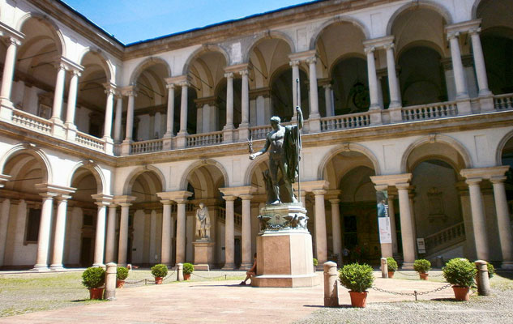Un des musées les plus importants d’Italie, la pinacothèque est un musée d’art moderne et contemporain qui renferme des œuvres d’art exceptionnelles, telles que le Souper à Emmaüs du Caravage, Le Mariage de la Vierge de Raphaël, ou La Lamentation sur le Christ mort d’Andrea Mantegna.
Museo del Novecento
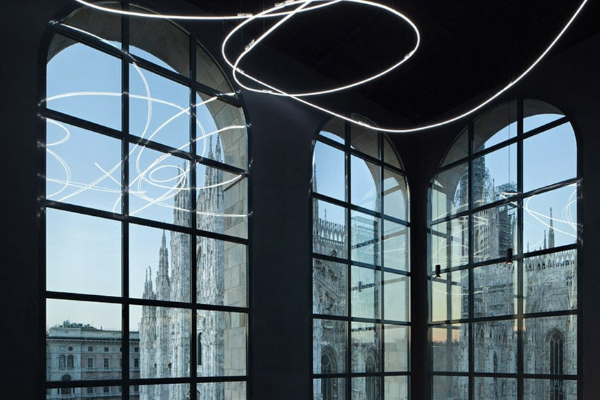À quelques pas du Duomo, le musée del Novecento permet de découvrir les différents mouvements artistiques apparus en Italie depuis le début du 20ème siècle : du futurisme au spatialisme, de l’avant-gardisme international à l’Art Pauvre et la Trans-avant-garde.
Une des œuvres les plus notables du Museo del Novecento est certainement Merde d’Artiste, de Piero Manzoni : 90 boîtes de conserves supposées en contenir, bien numérotées et signées…
Au dernier étage, qu’on soit amateur d’art ou néophyte, on ne manque pas de s’extasier sur la salle consacrée à Lucio Fontana et ses réalisations de néons blancs, avec une superbe vue sur le Duomo.
Multumedias
Photos
Videos
Food
Sbrisolona
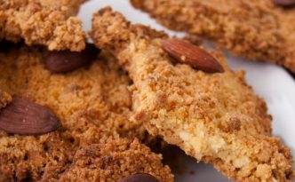La sbrisolona est un sablé originaire de Lombardie, et plus exactement de la ville de Mantoue. D’origine très ancienne, le nom de …
Lire La suiteAsperges à la milanaise
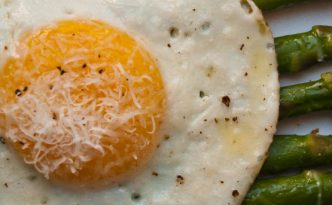Les asperges à la milanaise sont une recette typique de la Lombardie, bien qu’elles soient dégustées dans d’autres régions d’Italie. Ce plat, …
Lire La suiteCôtelettes de veau à la milanaise
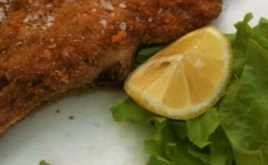La côtelette de veau à la milanaise est une recette typiquement lombarde, dont l’origine a pourtant été longtemps contestée par les Autrichiens. …
Lire La suiteCarpaccio de bresaola et roquette
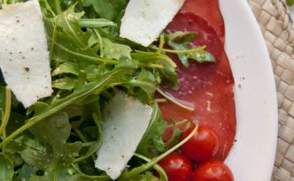La bresaola est une charcuterie IGP (Indication Géographique Protégée) de tradition lombarde, fabriquée à base de viande de bœuf crue, salée et assaisonnée, …
Lire La suiteOsso buco à la milanaise
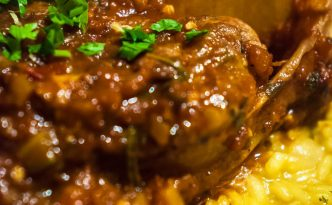L’osso buco à la milanaise, un plat de viande au goût fort et au parfum enivrant, est un élément incontournable de la …
Lire La suite